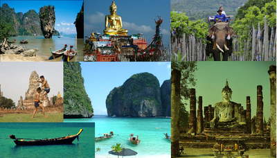

Comencemos esta Aventura juntos
Hola, soy Vane y me encanta dedicar mi vida a viajar por el mundo. Te cuento que cambio de ubicación con frecuencia, ya que me apasiona estar en movimiento, conocer lugares nuevos, culturas diferentes. Creé Viajando Voy hace unos años, cuando decidí emprender mi primer viaje sola, para compartir mis experiencias y consejos prácticos. Con el tiempo este blog fue mutando (junto conmigo) hasta convertirse en un espacio que promueve el slow travel, los viajes creativos y el asombro por los detalles cotidianos de cada lugar. Si te gusta viajar lento, soñás con vivir viajando o querés leer historias, estás en el lugar correcto. Viajando Voy es un blog personal, así que todo lo que vas a ver son simples y maravillosas experiencias que quiero compartirlas con vos. Te invito a seguirme para que viajemos juntos.
Primer destino: EUROPA
.jpg)
Cuando me preguntan qué recomiendo conocer de Europa me quedo en blanco. En este continente hay 50 países (y 6 parcialmente reconocidos) y de esos 56 conozco 10: ni un 20 por ciento. Cuando miraba el mapa de Europa, sentada en el escritorio de mi casa, sentía que todo estaba cerca y que la iba a poder recorrer en poco tiempo. Otro gran error. Europa es chiquita (si la comparo con, por ejemplo, las distancias en Argentina o América Latina) pero muy poblada y variada. Es cierto que todo queda cerca y que muchos países se pueden atravesar en pocas horas,pero cada uno es un mundo y merece su tiempo. Las capitales europeas son para vivirlas: hay muchísimo para ver, hacer, caminar, conocer. Y en dos días no se puede. Por eso les aconsejo que cambien el chip, desaceleren y se armen un itinerario con menos lugares
Popurri de Info
-Si quieren ir a un supermercado barato, busquen el Lidl más cercano. Suele tener los mejores precios, aunque no tanta variedad como otros supermercados. - Los precios de los museos varían, pero casi todos tienen algún día u horario de entrada reducida o gratuita, así que averigüen en la página web antes de ir. - En PRAGA es más barato tomar un vaso de cerveza que una gaseosa. En ESPAÑA también. - En Granada (España) si te pedís un jugo o cerveza te dan una tapa o ración de comida (por algo así como €2). - De los países que visité, los más caros me parecieron FRANCIA Y ALEMANIA. HUNGRIA me pareció uno de los más baratos. - Hay muchos descuentos para estudiantes o menores de 26 años (en transportes y museos). También hay descuentos para jubilados.
CONOCIENDO EL SUDESTE ASIATICO
Esta info está basada en mis experiencias de viaje en Tailandia, Malasia, Singapur, Indonesia, Filipinas, Laos, Camboya, Vietnam, China (sur), Hong Kong y Macau.
- La guia de viajes más famosa que recomiendo es Lonely Planet: Southeast Asia on a shoestring. Es útil para tener mapas, datos de hostels, teléfonos y direcciones útiles, precios, transportes, idiomas, etc. En el Sudeste Asiático se vende por todos lados y mucho más barata que en Argentina. Hay truchas, usadas, fotocopiadas, originales, viejas, viejísimas y actuales. Yo compré la mía en el aeropuerto de Bangkok. A veces la uso, a veces no tanto, pero siempre viene bien. Ah, eso sí, es un peso más en la mochila. Traten de no caer en lo que llaman el «Banana Pancake Trail«: un ruta informalmente creada por la Lonely Planet y que todos los fieles siguen cual camino hacia la verdad. Sálganse del circuito y busquen sus propias rutas si no quieren ver siempre a la misma gente.
Popurri de Info
- La mayoría de los países del SUDESTE ASIATICO requiere visa para entrar. Algunas se pueden sacar en el aeropuerto o la frontera al llegar, y otras deben tramitarse antes en ARGENTINA o en cualquier país del SEA (Sudeste Asiático). - La comida en el sudeste asiático es muy barata y está por todos lados: el deporte nacional en este lado del mundo es comer. - En Asia se hablan cientos de idiomas y como se imaginarán es imposible aprenderlos todos. Muchas veces me preguntan lo mismo: ¿Cómo hacías con el idioma? Según mi experiencia, con el Inglés se van a arreglar bien. - La conexión a internet es muy buena en capitales y grandes ciudades que están llenas de cibercafés y redes de wi-fi para acceder a internet. Los países más complicados para acceder a internet fueron LAOS (no hay tantos lugares de acceso, hay muchos pueblos que desconocen la internet) y CHINA. En CHINA, la Gran Muralla de Fuego puesta por el gobierno no permite acceder a páginas como Facebook, Youtube, Blogger, WordPress, Twitter, entre muchas otras.